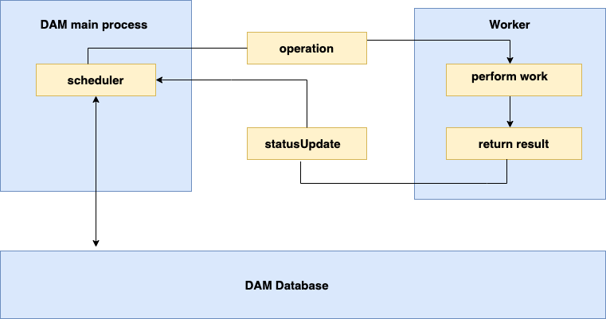

The operations framework allows the Digital Asset Management (DAM) feature of HCL Digital Experience (DX) to run asynchronous background processes.
Components
This framework consists of the following components:
DAM database: Stores all operations.
operation: Specific tasks that need to be performed. They are stored in the DAM database and handled by the scheduler.
scheduler: The controlling mechanism of the operations framework. It creates workers, assigns operations to them, and cleans up expired operations and workers.
scheduler heartbeat: The configurable interval at which the scheduler attempts to claim operations for workers.
statusUpdate: A message sent by a worker to the scheduler to report the result of an operation.
worker: Forked tasks created by the DAM main process. A worker receives an operation, executes it, and reports the results back to the main process. A worker handles only one operation at a time and includes a lastTouched metadata value to track how long it remains in its current state.

Operations
The following sections describe common operations that run in DAM.
Rendering and media processing
Operation
Description
prepareRenditions
Triggers rendition generation by mapping the detected MIME type to its predefined configuration.
generateVersion
Saves iterations of a media asset to maintain its edit history and allow reverting to previous states.
generateThumbnail
Generates a small preview image for lists and search results and prioritizes the original file's thumbnail for immediate viewing.
generateSupplement
Creates alternative media formats and resolutions, such as HD or 4K archives, low-bandwidth options, or browser-compatible variations.
generateKeyword
Extracts searchable keywords and topics from media content, including text from images, key terms from documents, and transcripts from videos.
Metadata
Operation
Description
generateMetaData
Extracts detailed information about your media file such as dimensions, duration, color information, camera settings, author information, and creation dates.
updateMetaData
Saves extracted file information to media records to enable search and referencing. Logs the update timestamp and the associated user.
validateThumbnail
Ensures thumbnail previews meet size, format, and display standards. Thumbnails that do not meet these standards can be regenerated.
Indexing and search
Operation
Description
initiateInitialIndexing
Creates or rebuilds the search index. Triggers recursive operations to scan media and collections to enable searchability.
initiateReIndexing
Rebuilds the search index to remove stale entries. Resolves index corruption and applies search functionality updates.
processAssetsForIndexing
Batches media items for efficient addition to the search index.
processAssetsForLiveIndexing
Immediately indexes newly uploaded or modified media items for near real-time search availability.
processAssetsDocumentBuilding
Converts media metadata into a structured indexing format by extracting searchable text, keywords, and categories.
invalidateIndexedContent
Flags indexed content for an update following configuration changes or bulk modifications. Triggers re-indexing on the next cycle.
processCollectionsForIndexing
Indexes collection hierarchies and metadata to enable search and filtering.
processCollectionsDocumentBuilding
Converts collection metadata into a structured format for search indexing.
processAssetForDeletion
Removes deleted media from the search index so it no longer appears in search results.
Version management
Operation
Description
versionRetention
Automatically removes older versions of media files when the configured version limit is exceeded. Prioritizes the cleanup of the oldest versions that have passed the minimum retention period.
regenerateRenditionOrVersion
Regenerates missing asset renditions and versions if the Cleanup flag is enabled in the system configuration.
Kaltura video integration
Operation
Description
VideoUploadToKaltura
Manages the Kaltura integration by automating video uploads, rendition generation, and thumbnail creation. Synchronizes metadata, status, and deletions to maintain consistency between systems.
Upload and post-actions
Operation
Description
schedulePostActions
Orchestrates automated post-upload tasks in sequence, including metadata extraction, rendition and thumbnail generation, and search indexing. Acts as the primary trigger for the media processing pipeline.
trackMediaState
Monitors upload and processing progress by verifying the generation of expected renditions. Updates the media state to SUCCESS upon completion or FAILURE if processing errors occur.
Staging and synchronization
Operation
Description
syncStagingCollectionContent
Synchronizes collection names and descriptions between DAM systems.
syncStagingMediaContent
Synchronizes media metadata (such as names, descriptions, keywords, and properties) between DAM systems.
syncStagingRenditionContent
Synchronizes asset renditions from the publisher to the subscriber in a staging configuration.
syncStagingVersionContent
Synchronizes asset versions from the publisher to the subscriber in a staging configuration.
syncStagingPermissionResource
Synchronizes user permissions and access control settings to maintain consistency between systems.
syncStagingCreatePermission
Creates user permissions on the target system for newly synchronized items.
syncStagingDeletePermission
Removes user permissions on the target system to match deletions in the source system.
syncStagingRoleBlock
Adds or removes role blocks in the target environment to match the source system.
syncStagingFavoriteContent
Synchronizes user-favorited items between systems.
syncStagingMediaTypeContent
Synchronizes MIME type definitions (such as image, video, or document) and their associated settings between systems.
syncStagingMediaTypeGroupContent
Synchronizes media type group rows between publisher and subscriber systems.
initiateNextSync
Schedules and triggers the next synchronization cycle between systems.
initiateCollectionTreeTraversal
Scans the collection hierarchy and compares items with the subscriber system to generate mismatch logs.
findStagingPermissionsMismatch
Identifies and reports permission discrepancies for items between systems.
compareRecords
Evaluates items to determine if synchronization is required based on detected changes.
processCollection
Prepares a collection, its items, and associated permissions for synchronization.
processCollectionItems
Prepares all media items within a collection for synchronization.
resyncSubscriber
Re-synchronizes items based on the mismatch logs to resolve discrepancies between systems.
Content management
Operation
Description
purgeEvents
Clears event records from the activity log after a 90-day retention period.
updateSyncStatus
Updates synchronization progress between systems. Displays active, successful, or failed statuses.
Deletion
Operation
Description
deleteMedia
Marks media items, including associated thumbnails, copies, and collection references, for soft-deletion. Items remain recoverable for a configurable retention period.
deleteStorage
Permanently removes media files from storage after the soft-deletion retention period expires to free disk space.
deleteCollection
Soft-deletes a collection, including all nested sub-collections and associated media items. Items remain recoverable for the configured retention period (default: 30 days).
deleteOperations
Clears old operation records to maintain log size. Retains failed operations based on configured thresholds.
deleteIndexedDocumentsByQuery
Removes deleted items from the search index to prevent them from appearing in search results and maintain synchronization with the database.
Cleanup and maintenance
Operation
Description
cleanupMedia
Removes temporary chunks, cache files, and failed processing files after media deletion or processing failures to free up storage space.
cleanupCollections
Removes empty collection records and resolves relationships between collections and media items, particularly after deletions or moves to prevent orphaned entries.
deleteOrphanDirectoryAndMedia
Removes files and folders from storage that lack corresponding database records. Resolves discrepancies caused by failed uploads or data corruption.
deleteOrphanMediaStorage
Removes storage records for deleted or inactive media files to prevent broken database references.
clearTrash
Permanently deletes soft-deleted items after a configurable retention period (default: 30 days) to free up storage space.
Cleanup of failed and obsolete operations
The operations cleanup job automatically removes failed or obsolete records from the database. This process is governed by two configurable thresholds in the values.yaml file that determine when records are eligible for deletion.
Attribute
Description
failedOperationThresholdTimeHours
Specifies the maximum age (in hours) that a failed operation record is retained before deletion.
failedOperationThresholdLimitRecords
Specifies the maximum number of failed operation records allowed in the database. When this limit is exceeded, the oldest records are deleted.